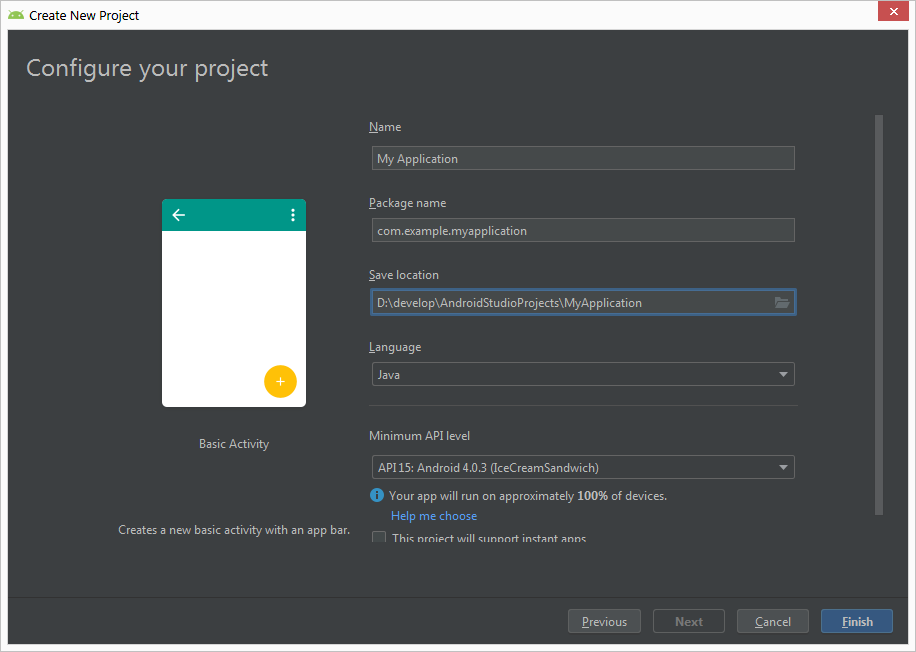
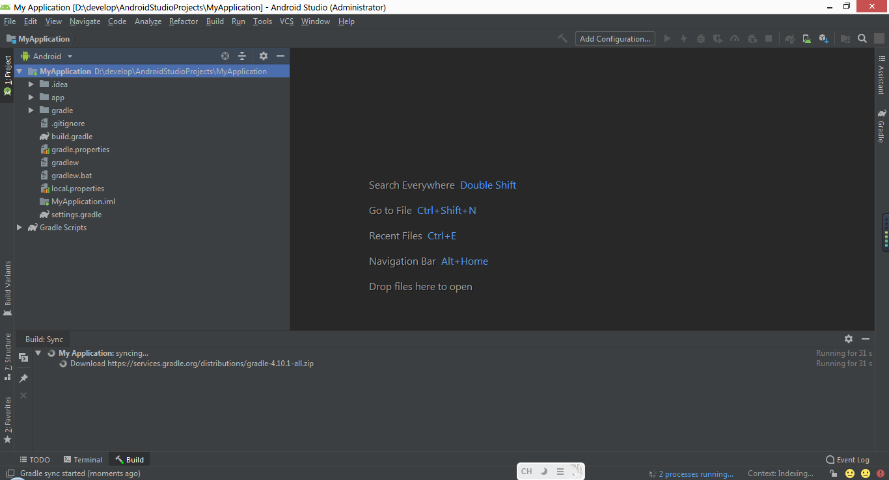
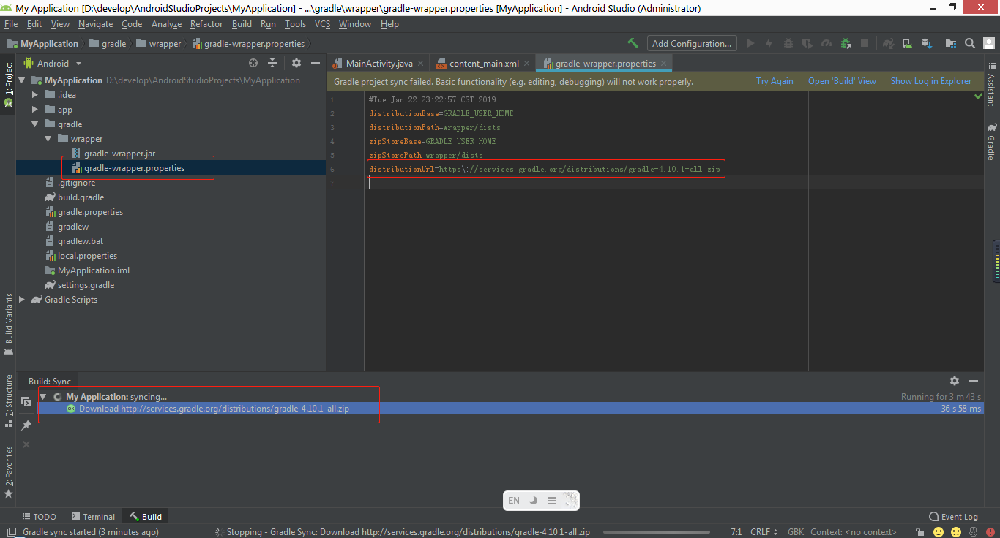
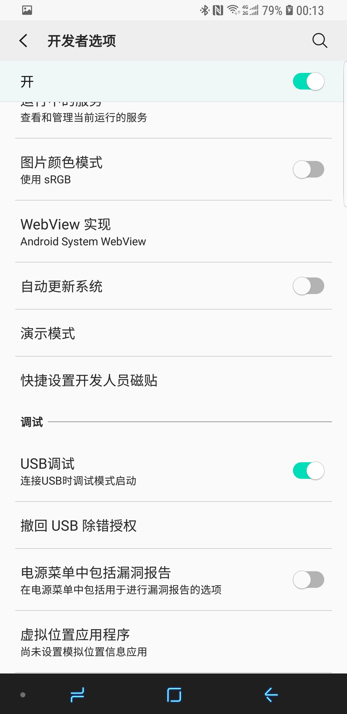
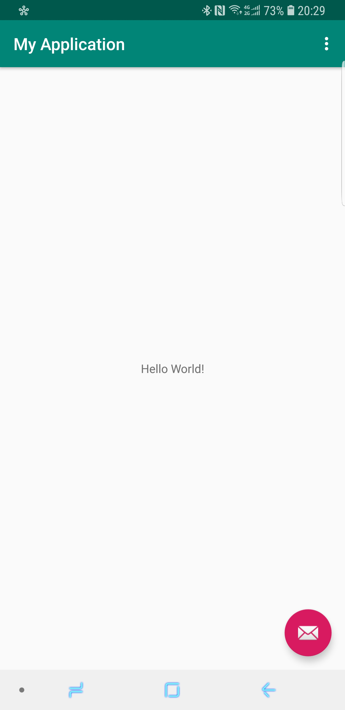

1 创建工程
打开AndroidStudio程序，首页如下图：

- 创建新的
AndroidStudio 工程。
- 打开已有的
AndroidStudio 工程。
- 从版本控制器导出工程。
- 分析或调试
APK。
- 从
Gradle/Eclipse 工程导入。
- 导入
Android 代码示例。
选择创建新的工程：

支持创建手机、平板、穿戴设备、电视等多个平台的工程。入门阶段选择第一个就好。 任意选一个Activity模板，例如：BasicActivity。

输入项目名称，包名，保存的位置以及兼容的最低系统版本，图中是 API 15，Android 4.0.3 版本。支持 Java 和 Kotlin 两种编程语言。
完成之后，会下载部分依赖的组件，如图：

最后，进入工程页面，图中正在下载 gradle 4.10.1 版本。

如果在下载 gradle 的时候遇到等了很久却下载失败的情况。

可以复制下载的地址，使用浏览器或迅雷等工具下载。下载成功之后，将 zip 文件复制到到相同版本名称的目录下，请忽略随机串。

图中是正确配置的结果，需要手动 解压 zip 文件，并删除 part 文件，最后新建一个 ok 文件，保证 lck 文件 和 ok 文件都是 0 KB。
重启 AndroidStudio ,会自动跳过 gradle 下载。除非修该改 gradle-wrapper.properties 中的 gradle 版本。

初次编译时，需要等待一段时间下载工程依赖的第三方库，编译成功之后，注意图中标记处的前后对比。
2 连接手机
如果，你是一只计算机小白，那么这个地方可能让你头大，笔者曾经也是这么过来的。强烈推荐在电脑上安装豌豆荚,其他类手机助手软件也可以。助手软件会帮助你安装好手机驱动，提示你打开开发者模式。
如果，你是计算机高手，那么可以自行安装手机驱动程序，使电脑能够访问手机数据存储。其次，自行百度具体品牌手机，打开开发者模式的方式。
至于，使用 Mac 和 Linux 的小伙伴们大可放心。因为 Android 和 Mac 都使用 Linux 内核，因此 Android 设备和 Mac/Linux 系统可以很方便的进行连接，不需要单独安装驱动。但是，打开开发者选项和USB调试的方式，同上。
3 打开开发者模式
通用步骤：设置 -> 关于手机 -> 系统信息 中反复点击版本号直至提示开发者模式已经开始。回到设置页面，可以找到开发者选项菜单。进入开发者选项配置页面，打开USB调试。

重新插拔手机，弹出窗口，提示需要授权电脑进行调试手机。

如果是自己的电脑，建议勾选底部的一律允许使用这台计算机进行调试。
oppo 手机比较恶心，每隔一段时间，会自动终止 adb 服务，并关闭 USB 调试。需要重新打开。当遇见 OV 系列的手机，出现连不上手机的情况或者联上手机但无法进行调试的情况，请检查开发者选项和USB调试开关。
小米手机打开开发者模式的方式有些特殊，等有机会使用小米手机再举例。
4 使用模拟器
5 运行工程
点击 app 右边的三角形，运行程序。在弹出的框中选择真机或模拟器。

Demo 成功运行起来之后的样子，如下图。

创建好 Demo 工程，并正确编译运行之后，若想对 AndroidStudio 工程的各个目录和文件有更深刻的认识，请阅读[从零构建Android工程](/blog/2018-11-29/)
觉得有用？那打赏一个呗。[去打赏](/donate/)